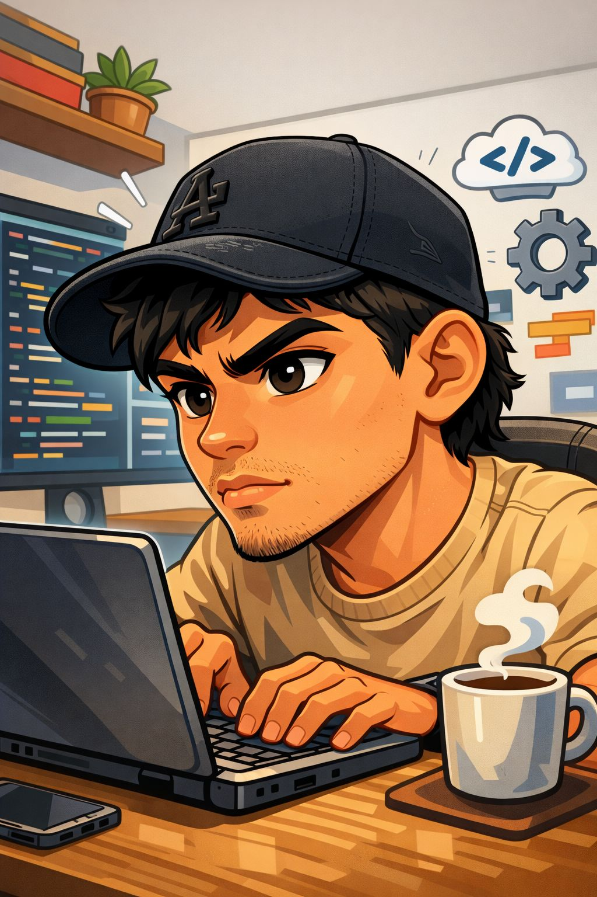

Web Developer in Training | Riwi Academic As an active student at Riwi, I specialize in software development with a practical approach. My current training focuses on: Web Architecture: Semantic structuring with HTML5. Design and Style: Advanced layout with CSS3 (Flexbox and Grid). Agile Methodologies: Collaborative work and solving technical challenges. My goal is to apply everything I've learned to projects that make a difference.
